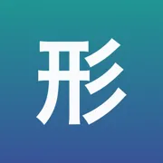

Japoński w dziesięciu aplikacjach
Dziesięć aplikacji do nauki japońskiego, każda o jednej rzeczy: gramatyka, czytanie, odmiana, partykuły, liczniki, mowa potoczna, keigo, akcent i onomatopeje.
Który problem, ta aplikacja
| Jeśli to jest twój problem | Aplikacja |
|---|---|
| Mylisz podobne konstrukcje? Zobacz je obok siebie w prawdziwych zdaniach, nie w samym opisie. Do tego skan japońskiego ze zdjęcia i sprawdzenie własnego zdania przez AI. | Kaname: Gramatyka japońskaPowtórki JLPT: N5 N4 N3 N2 N1 |
| Znasz znak. Znasz słowo. Ale czy przeczytasz je, gdy wyskoczy w środku zdania? To osobna pamięć — i ta aplikacja ją ćwiczy. | Bunmyaku — Japoński w zdaniuCzytaj japoński w kontekście |
| Formy biorą się z reguł, nie z pamięci. Ćwicz je, aż 書いて pojawi się, zanim zdążysz o nim pomyśleć. | Katsuyokei: Odmiana japońskaJapońska odmiana w praktyce |
| Wiedzieć, co znaczy に, to nie to samo co wiedzieć, kiedy jest で. Dziewięćset zdań, jedna luka, cztery partykuły — aż właściwa przychodzi sama. | Joshi: Partykuły japońskieĆwiczenia z は, が, に, で |
| Przestań zgadywać, jak czyta się japońskie liczniki. 三本 to さんぼん, 六本 to ろっぽん — i stoi za tym reguła. | Kazoekata: Liczniki japońskieJapońskie liczniki w praktyce |
| Podręcznik uczy 〜ている. Ludzie mówią 〜てる. Kuzushi ćwiczy tę lukę: rozpoznawanie skrótu i wytwarzanie go są liczone osobno, bo to dwie różne umiejętności. | Kuzushi: Mowa potocznaAnime, dorama i skróty |
| Dziewięć aplikacji uczy po jednej rzeczy. Żadna nie powie ci, której naprawdę potrzebujesz. Jeden arkusz pod zegarem i odpowiedź przestaje być zgadywaniem. | Shindan: Poziom japońskiegoWkrótce w App StoreTest JLPT: N5 N4 N3 N2 N1 |
| Znać formę to nie to samo co wiedzieć, wobec kogo jej użyć. Za dużo keigo jest błędem dokładnie tak samo jak za mało – i to jest ta połowa, której nie uczy nikt. | Keigo: Grzeczność japońskaWkrótce w App StoreJapoński formalny do pracy |
| Japoński ma warstwę, której kana nie zapisuje. 箸 i 橋 pisze się tak samo i nie są tym samym słowem – a różnica to reguła do nauczenia, nie lista do wykucia. | Kifuku: Akcent japońskiWkrótce w App StoreWymowa, intonacja, słuchanie |
| Onomatopeje nie są losowe. 濁点 robi rzecz większą, cięższą i mniej przyjemną – kto to rozumie, zgadnie słowo, którego nigdy nie widział. Reszta uczy się trzystu słówek. | Onomatope: Japońskie dźwiękiWkrótce w App StoreSłówka z mangi i anime |
Wszystkie aplikacje
 Kaname: Gramatyka japońska要
Kaname: Gramatyka japońska要Kaname uczy gramatyki japońskiej tak, jak działa prawdziwa znajomość języka: nie sprawdza, czy pamiętasz regułkę, tylko czy potrafisz jej użyć.


Katsuyokei: Odmiana japońska活用形Katsuyokei ćwiczy japońską odmianę do momentu, w którym przestaje wymagać namysłu.
 Joshi: Partykuły japońskie助詞
Joshi: Partykuły japońskie助詞Joshi ćwiczy japońskie partykuły, aż wybór właściwej przestaje być decyzją.


 Keigo: Grzeczność japońska敬語
Keigo: Grzeczność japońska敬語Japoński rejestr grzecznościowy to nie lista form do zapamiętania, tylko decyzja: wobec kogo.
 Kifuku: Akcent japoński起伏
Kifuku: Akcent japoński起伏Kifuku uczy japońskiego akcentu tonicznego – warstwy języka, której kana nie zapisuje.